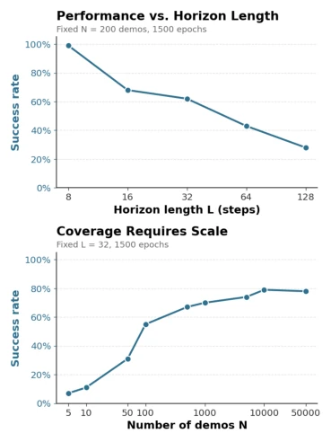
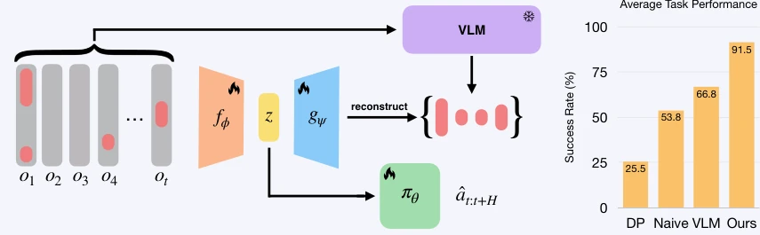
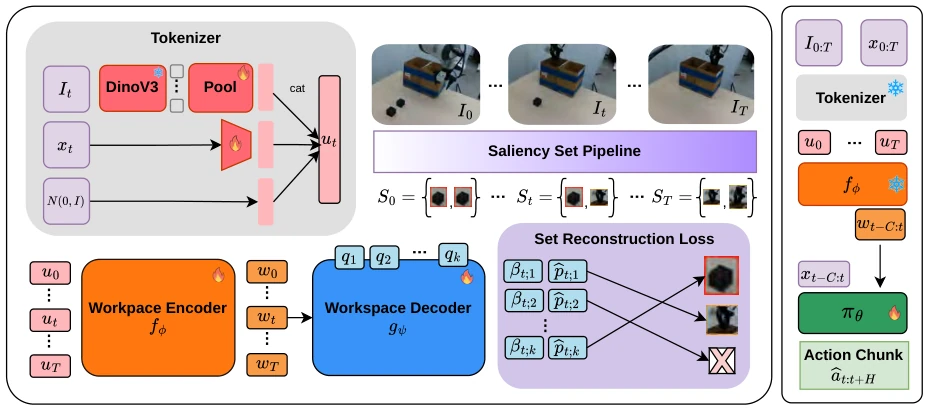
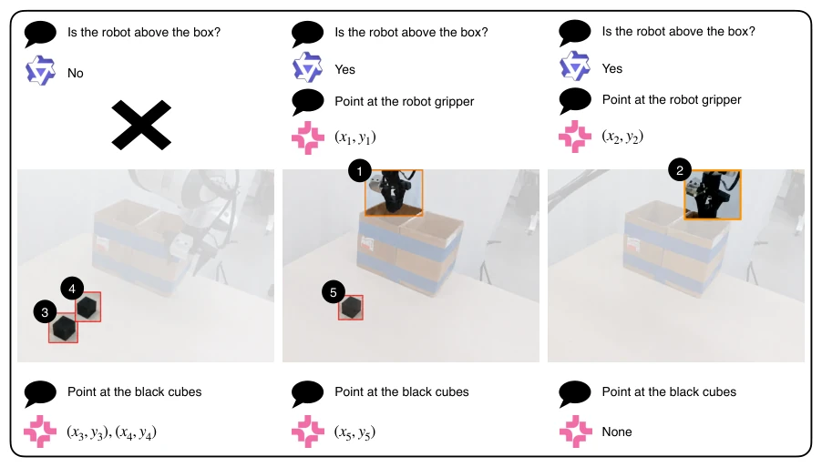
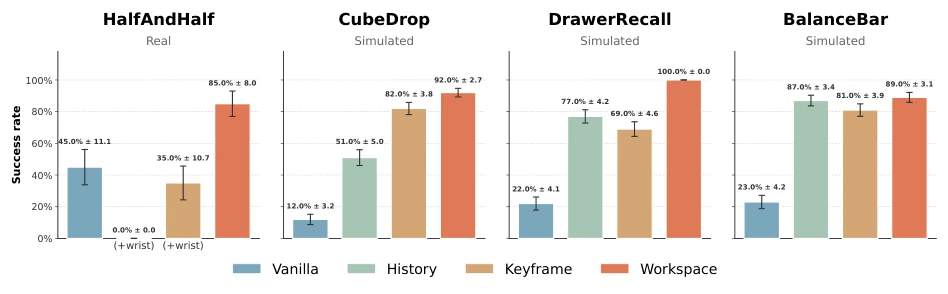
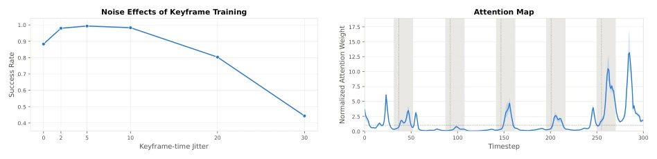
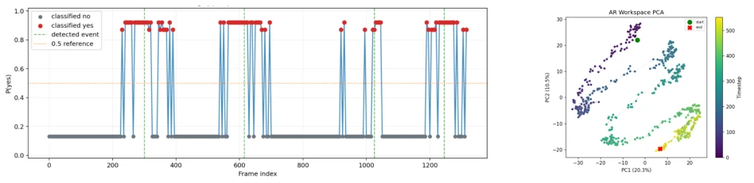
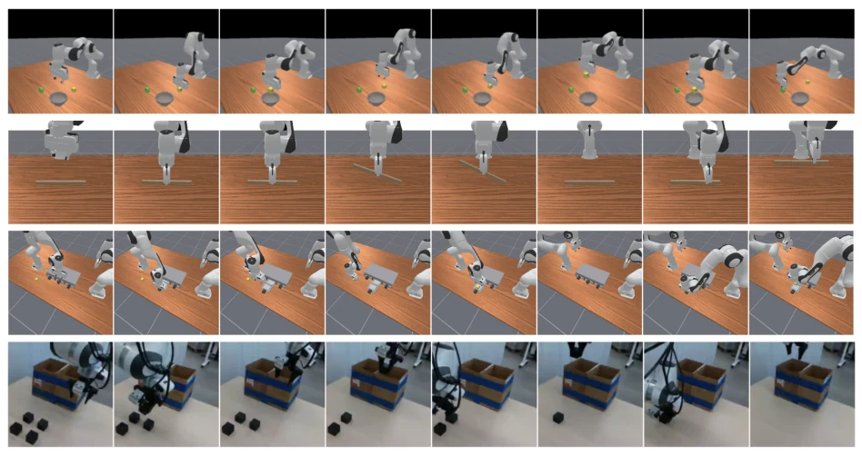
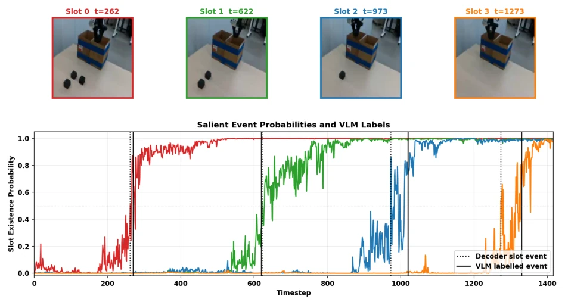
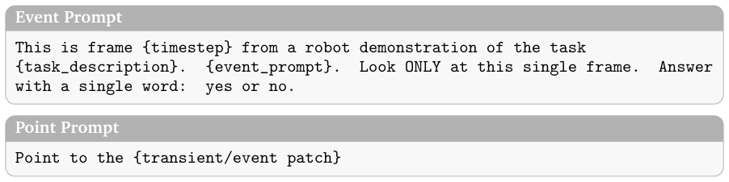

This paper proposes a clever idea of "spatiotemporal compression", moving expensive VLM inference from deployment time to training time, effectively equipping robots with a "lightweight hippocampus". Although the "workspace" concept originates from cognitive psychology, the implementation here is quite pragmatic. However, relying on VLM to generate supervision signals is a potential risk; what if the VLM misses labeling key information and the policy fails to learn? Moreover, the Transformer encoder has quadratic complexity, which may still be a bottleneck under long sequences. Most ironically, they saved inference time, yet the performance significantly outperformed the Keyframe method that queries VLM in real-time, indicating that "distillation" is more reliable than "real-time query". This strategy of "brute force during training, lightweight during deployment" is highly reference-worthy in the field of embodied intelligence, but the generalization of VLM annotations still needs verification, and methods similar to language summarization were not compared. Although the paper claims superiority over VLM-in-loop, noise in VLM annotations during actual deployment may affect robustness.
研究动机Motivation
长程记忆是具身智能的痛点。直接喂全历史会导致分布偏移和虚假相关（Geirhos et al., 2020; De Haan et al., 2019）。现有方案如 Keyframe（Mark et al., 2026）或语言摘要（Torne et al., 2026）虽能压缩，但推理时频繁调用大模型导致高延迟和成本。这造成了训练与部署的算力不对称：训练数据少，但推理算力受限。作者想利用训练算力换取部署效率，解决记忆密集型任务中的延迟与性能权衡问题。此外，数据稀缺性使得训练时算力利用更为关键。
Long-term memory is a pain point in embodied intelligence. Directly feeding full history leads to distribution shift and spurious correlations (Geirhos et al., 2020; De Haan et al., 2019). Existing solutions such as Keyframe (Mark et al., 2026) or language summarization (Torne et al., 2026) can compress, but frequent calls to large models during inference lead to high latency and cost. This creates an asymmetry in compute between training and deployment: training data is scarce, but inference compute is limited. The authors aim to leverage training compute to exchange for deployment efficiency, solving the latency and performance trade-off in memory-intensive tasks. Furthermore, data scarcity makes the utilization of compute during training even more critical.

Figure 2: Performance degrades with POMDP horizon.
The core architecture is the Workspace Model. The training process includes two stages: First is Saliency Supervision, using Qwen3-VL to identify key timestamps, then using MolmoPoint to extract corresponding image patches as the Ground Truth set $S_t$. Second is Encoder-Decoder training, the Workspace Encoder adopts a causal Transformer, combining historical observation tokens with learnable slots, outputting Workspace Token $w_t$. The Decoder is based on the DETR framework, calculating Set Reconstruction Loss via the Hungarian matching algorithm, forcing $w_t$ to reconstruct patches and their positions in $S_t$. In the policy training phase, the Encoder is frozen, using Diffusion Policy to predict actions based on the short window $w_{t-C:t}$ and proprioception. The key innovation lies in "amortizing" the VLM inference cost to the training end, utilizing Set Reconstruction Loss to ensure the latent space retains task-relevant visual information, rather than simple compression. The loss function includes feature reconstruction terms and activation terms to ensure information integrity.

Figure 1: We propose the Workspace Model, an architecture trained to produce compressed latent repre- sentations of history used for downstream policy learning. Workspace Models are trained by encoding raw histories and reconstructing high-level salient information, as judged by a VLM, thus amortizing test-time compute. Across real and simulated tasks, our model solves memory-intensive tasks with low latency.

Figure 3: Workspace Model Training (left): Training involves tokenizing the image and proprioception through DinoV3 and a learned projection, respectively. These tokens are combined with an input slot at every timestep and fed to the workspace encoder to produce workspace tokens. Each workspace token, wt, is supervised to re- construct the set St through a Hungarian matching set reconstruction loss on the workspace decoder outputs. Im- itative Model Training (right): Images and proprioception are fed into the tokenization and workspace pipeline to produce a short history of workspace tokens. These are used as input to train a Diffusion Policy πθ, along with the raw proprioception, to output the future action chunks.

Figure 4: Our saliency-supervision pipeline which prompts Qwen (in purple) and MolmoPoint (in pink) to detect and locate events and build a growing memory. Orange boxes represent visual information which persists in the salient set over time. Red boxes represent “transient” information for that timestep only.
Tested 4 tasks including CubeDrop, DrawerRecall, etc., on ManiSkill3 simulation and Franka real robot. Baselines include VanillaDP, HistoryDP, and Keyframe. Metrics focus on success rate and latency. Results show Workspace achieved the highest success rate in both simulation and real robot (91.5% vs 66.8%), latency was only 2.3 times that of VanillaDP, far lower than Keyframe's 7.3 times. Ablation shows that smooth latent representations are more robust to distribution shift than discrete keyframes, solving the control aliasing problem. Tasks cover counting, spatial recall, and context adaptation, verifying different memory dimensions.

Figure 6: Success rates across 3 simulated (N=100) and 1 real task (N=20). For the real task, we use wrist cameras for the methods unable to pick the cubes correctly with a global camera only, denoted with “(+wrist)”

Figure 7: Left: Success as a function of noise from optimal timings. Right: Attention scores (average over 10 trajectories) measured relative to the average score at a given offset from the current timestep. Gray areas are segments of important events to remember

Figure 9: Left: A plot of the VLM detections of an event across time with the green lines representing the labels generated. Right: A PCA of the workspace token representations across a rollout.
其他图片Other Figures

Figure 5: Every row depicts a representative demonstration for the tasks in order top-to-bottom: CUBEDROP, BALANCEBAR, DRAWERRECALL, and HALFANDHALF. The first three rows are selected 3rd-person camera renderings for the trajectory. The fourth row is the global camera used for training.

Figure 8: We show images and their timesteps which correspond to moments when a slot probability crosses a threshold of 0.5 (top). The moments where slots move above the threshold are “decoder slot events” shown with dotted lines. We also show the slot probabilities across time for every slot along with the VLM-supervised labels. As seen, decoder firings slightly diverge from the ground truth in order to match up to the event’s general visual features, creating a smoothing effect (bottom).

Figure 10: Prompt templates used for event detection and point prediction.